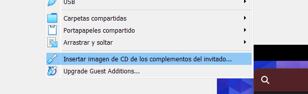

pacman -S virtualbox-guest-utils
systemctl start vboxservice.service
systemctl enable vboxservice
modprobe -a vboxguest vboxsf vboxvideo
pacman -S hwinfo
hwinfo --framebuffer
WINDOWSEN VBoxManage.exe programa dagoen tokian (C:\Program Files\Oracle\VirtualBox rutan zihurenik.)
exekutatu hurrengo agindua.
$ .\VBoxManage setextradata "Arch Linux Raid 0" "CustomVideoMode1" "1360x768x24"